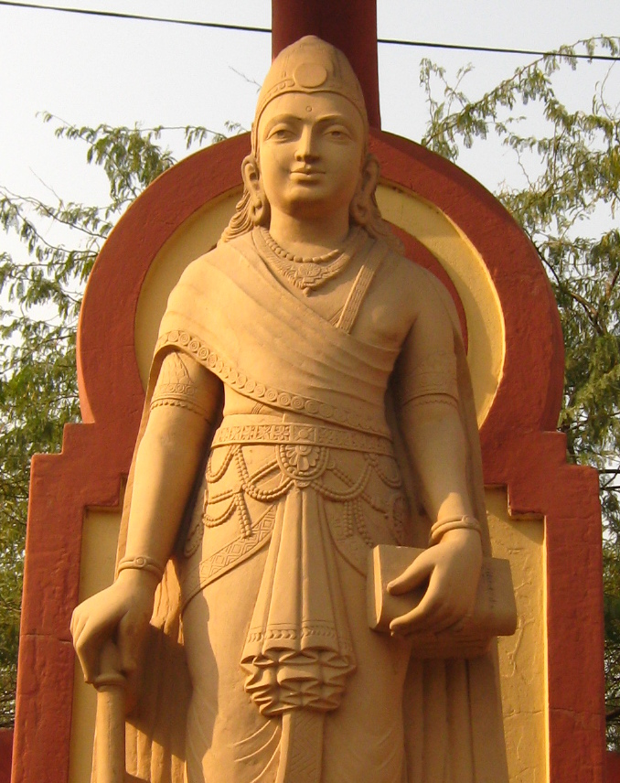

This empire was founded by the first emporer Chandragupta Mayura. Chandragupta's rise is shrouded in myth. The region had a lack of a dominant power becuase the greek empire had fragmanted so he attacked and controlled the nearby region of Magadha after encouragement from his friend. This ickstated the conquest of all of India, which he mostly conquered except the state of Tamil Nadu which was ruled by the early Chola dynasty. His grandson was Ashoka, who was one of the most famous Indian emporers ever. As a monarch he was initially aggresive, crushing revolts in his lands. He also declared many wars, but seeing the devestation, he converted to Budism and became very peaceful. The following emporers were horrible and the emporer fell into ruin.
There were multiple major religions in this empire since the kings often switched religions often. For example Chandragupta switched from Hinduism to Jainism, his son switched from Jainism to Budhism, and Ashoka changed from Hinduism to Budhism. Hinduism was still the dominant religion, but there was a large population practicing Buddhism and Jainism. Theculture was based heavily on the religion.
